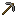
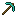

Seichi Server 3rd Items
初期ツルハシ
この整地鯖で1番最初に入手するツルハシ。
採掘可能: 石
木のツルハシ+
強化された木のツルハシ
エンチャント: 耐久力3, 効率1
採掘可能: 石
石のツルハシ

石製のツルハシです。安山岩掘れます。
採掘可能: 石, 安山岩
石のツルハシ+
強化された石のツルハシ
エンチャント: 耐久力3, 効率1
採掘可能: 石, 安山岩
鉄のツルハシ
鉄製のツルハシ
採掘可能: 石, 安山岩, エンドストーン
鉄のツルハシ+
強化された鉄のツルハシ
エンチャント: 耐久力3, 効率1
採掘可能: 石, 安山岩, エンドストーン
ダイヤモンドのツルハシ

ダイヤモンド製のツルハシ
採掘可能: 石, 安山岩, エンドストーン, 黒曜石
ダイヤモンドのツルハシ+
強化されたダイヤモンドのツルハシ
エンチャント: 耐久力3, 効率1
採掘可能: 石, 安山岩, エンドストーン, 黒曜石
ダイヤモンドのツルハシ++
石ハーフが掘れるツルハシです。採掘速度はやすぎ！！
エンチャント: 耐久力3, 効率2, 修繕
採掘可能: 石, 安山岩, エンドストーン, 黒曜石, 石ハーフブロック